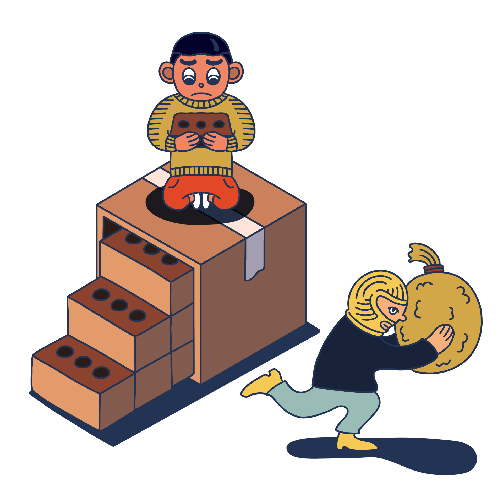
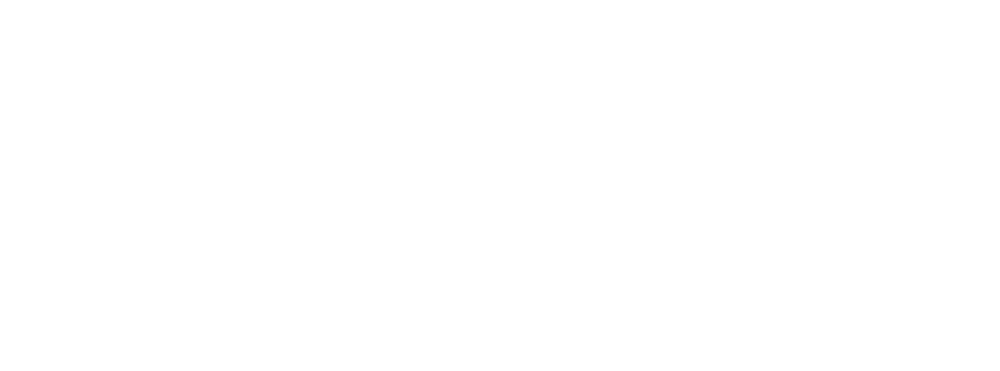
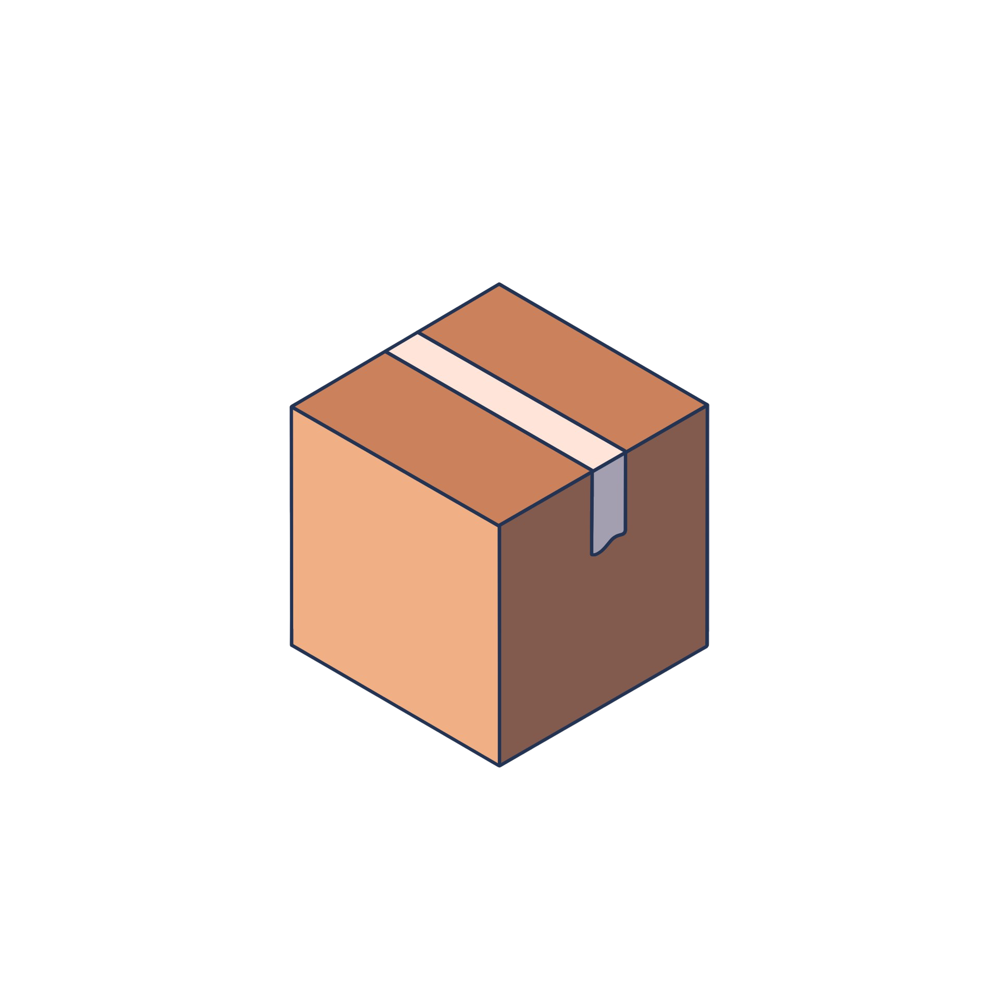

모바일 중고거래 100만 시대
미리 알아야 피할수 있는중고거래 사기


매년 증가하는 중고거래 사기 피해액
2014년 4만 5천 건에서 2019년 9만건으로 2배가량 늘어난 중고거래 사기 피해건수
매년 다양한 플랫폼들이 사기를 줄이기 위해서 노력하지만 줄어들고 있지 않습니다
매년 다양한 플랫폼들이 사기를 줄이기 위해서 노력하지만 줄어들고 있지 않습니다
중고거래사기
온라인 중고거래 시장 규모
5배 증가
2014년-2020년
4조원
2014년
2014년
20조원
2020년

2020년
중고거래 사기 피해액
5배 증가
2014년-2020년
202억 1500만원
2014년
2014년
897억 5400만원
2020년
2020년
같은 비율로 증가하는 사기
플랫폼과 여러 방송에서도 많이 조명된 중고거래 사기이지만 사람과 사람사이의 거래이기에
‘신뢰’를 이용한 사기의 수법이 증가하고 안전거래를 이용한 신종 사기들이 넘쳐나고 있습니다
‘신뢰’를 이용한 사기의 수법이 증가하고 안전거래를 이용한 신종 사기들이 넘쳐나고 있습니다
그러면 어떻게 사기를 방지할수 있을까?
‘싼 물건은 싼 이유가 있는법’
중고거래 시세보다 저렴한 상품은 일단 거르고 보는게 중요하다.
중고거래 시세보다 저렴한 상품은 일단 거르고 보는게 중요하다.
미리알고 예방하자
중고거래 사기방지 위원회
01795 서울특별시 노원구 화랑로 815 삼육대학교 시온관 210호
TEL. (010) 9990 - 8651
TEL. (010) 9990 - 8651